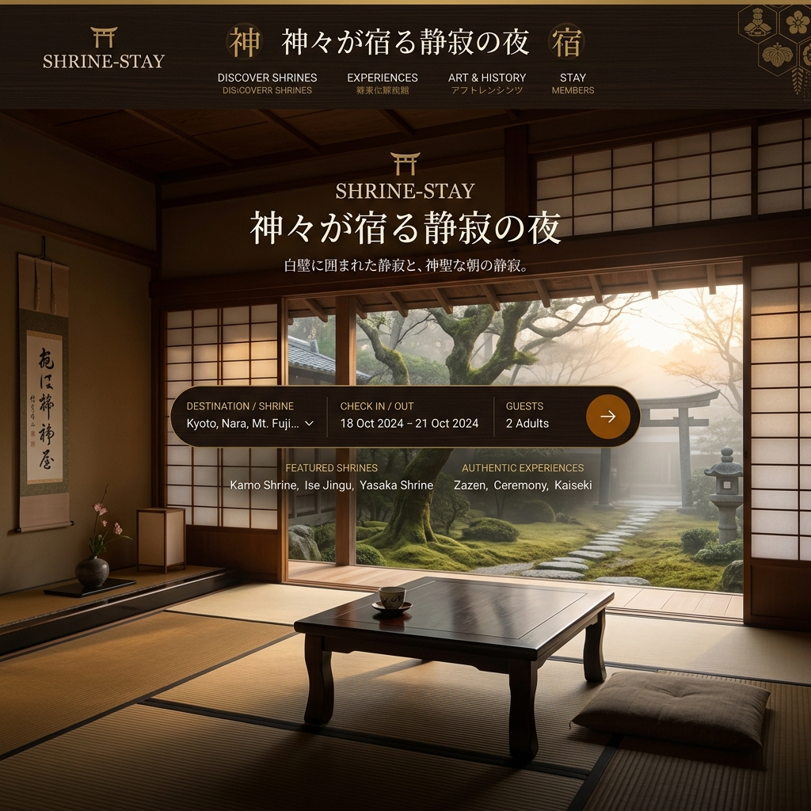

神々が宿る静寂の夜を、
あなたのものに。
日本全国の歴史ある神社仏閣に、一晩一組限定で宿泊できるエクスクルーシブなプラットフォーム。観光客が消えた夜の静寂と、荘厳な朝の祈りを体験する「SHRINE-STAY」。

五感を研ぎ澄ます、圧倒的な「非日常」
日中は数千人の観光客でごった返す京都や鎌倉の有名寺社。しかし、閉門後の世界を知る人はほとんどいません。月明かりに照らされた枯山水、夜風に揺れる竹林の音。SHRINE-STAYは、その神聖な空間を独占する究極のラグジュアリーを提供します。
宿坊の概念を覆す、モダンな快適性
文化財に泊まる
築数百年の国指定重要文化財や、通常非公開の離れを、建築の美しさを一切損なうことなく宿泊施設としてリノベーション。
最高級のホスピタリティ
「修行」ではありません。最高級の和布団、床暖房、ヒノキ風呂など、五つ星ホテルと同等以上の快適なアメニティを完備。
専属コンシェルジュ
滞在中は専属の英語対応バトラーが付き、食事の手配から歴史的背景の解説まで、あらゆる要望にパーソナルにお応えします。
住職・神主が導く、プライベートな体験
ただ泊まるだけではありません。翌朝は日の出と共に、一般には公開されない本堂での朝の祈祷（読経・祝詞）に特別に参加。さらに、住職によるプライベートな座禅指導や、茶室での本格的なお点前など、魂を浄化する本物の体験が用意されています。
地域の文化財を守る、持続可能なエコシステム
多くの由緒ある寺社が、檀家離れと老朽化による莫大な修繕費に苦しんでいます。SHRINE-STAYの高単価な宿泊費は、屋根の吹き替えや国宝の維持管理費として直接還元されます。あなたの滞在が、日本の歴史を次の100年へ繋ぐパトロン活動となります。
The Experience | 奈良・山奥の古刹
街の光が一切届かない山深い寺院。精進料理のフルコースを堪能した後、虫の音だけが響く静寂の中で眠りにつく。翌朝、冷たい空気の中で行われる読経のバイブレーションが身体の芯に響き渡った時、多くのゲストが涙を流します。
失われた「精神の静けさ」を取り戻す
情報が氾濫する現代社会において、世界のトップリーダーたちが最も求めているのは「完全な静寂」です。私たちは、日本の寺社が持つ精神的価値を再定義し、世界を癒やすためのインフラとして開放します。